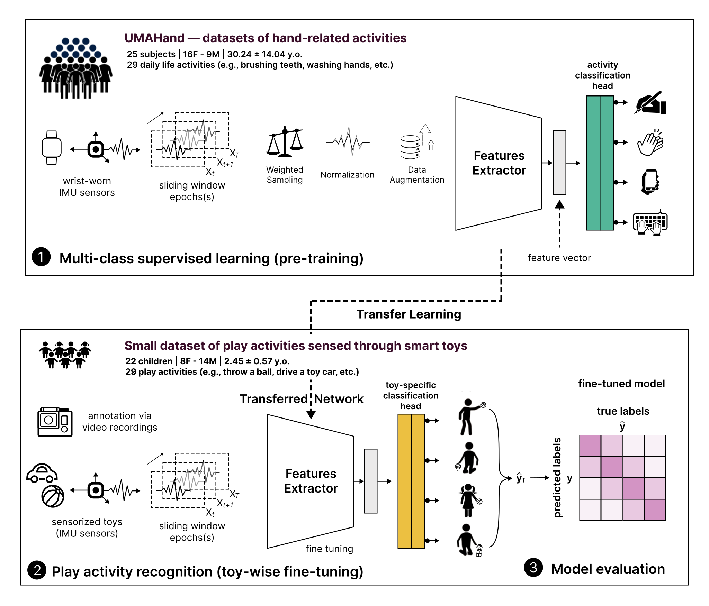
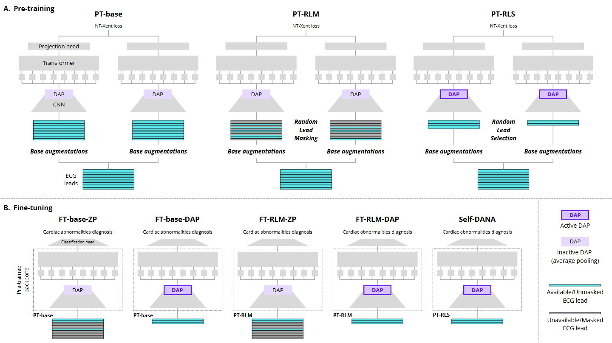
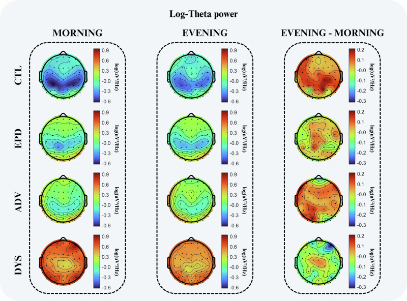

I build machine learning systems that read movement from instrumented everyday objects to characterize human motor behavior with a particular focus on children with neurodevelopmental disorders.
About
I am a PhD candidate in Informatics at the Faculty of Informatics, Università della Svizzera italiana (USI), based at the Institute of Information Systems and Networking (ISIN), SUPSI, advised by Prof. Marc Langheinrich (academic advisor) and Dr. Michela Papandrea (research advisor). I am part of the Data Engineering, Analysis and Processing team, and my research sits at the intersection of machine learning, signal processing and human-centered computing: sensor-based human activity recognition from instrumented everyday objects, physiological signal modeling, affective computing, and applied ML for healthcare and accessibility. Before my PhD, I was a research intern at the Institute of Digital Technologies for Personalised Healthcare (MeDiTech, SUPSI). I hold an MSc in Biomedical Engineering cum laude from the Polytechnic University of Turin and a BSc in Biomedical Engineering cum laude from the University of Palermo.
News
Research highlights

Wear2Toy: wearable-driven activity recognition for hand-held objects
A sensing and modeling pipeline that leverages wearable devices to recognize hand-held object activities, avoiding the need to instrument every object of interest individually.

Self-DANA: resource-efficient, channel-adaptive self-supervised ECG modeling
A resource-efficient, channel-adaptive self-supervised approach for building ECG foundation models, presented at the TS4H workshop at NeurIPS 2025 and currently in review at Computers in Biology and Medicine (Elsevier).

Altered wakeful theta activity in levodopa-induced dyskinesia
A study characterizing altered wakeful theta brain activity as a marker of levodopa-induced dyskinesia in Parkinson's disease, published in npj Parkinson's Disease.
Publications
Full list on Google ScholarSelf-DANA: A Resource-Efficient Channel-Adaptive Self-Supervised Approach for ECG Foundation Models
Wear2Toy: Leveraging Wearable Devices for Hand-Held Objects Activity Recognition
Altered wakeful theta activity characterizes levodopa-induced dyskinesia in Parkinson's disease
Self-DANA: A Resource-Efficient Channel-Adaptive Self-Supervised Approach for ECG Foundation Models
Designing for Attention: Evaluating an Affordable Immersive VR Platform for Neurodiverse Children
Evaluation of Feature Selection and Regression Models to Predict Biomass of Sweet Basil by Using Drone and Satellite Imagery
Toward unbiased emotion recognition: overcoming user bias with siamese convolutional networks
Fine-Grained Human Activity Recognition Through Dead-Reckoning and Temporal Convolutional Networks
Sleep apnea events recognition based on polysomnographic recordings: a large-scale multi-channel machine learning approach
GAIT: gait analysis interactive tool, a pipeline for automatic detection of gait events across different motor impairments
Awards & grants
Innovation Booster Grant — Future Food Farming
InnoSuisse. CHF 39,000.
Best Paper Award
22nd edition of the CoMoRe-AI workshop, co-located with IEEE PerCom'26.
Travel Grant
PerCom'26 travel grant selection committee. EUR 250.
Teaching
Supervised Learning
Teaching Assistant · B.Sc. Data Science, SUPSI
Multimodal Recommendation Systems and Complex Networks
Teaching Assistant · MSE Data Science, SUPSI
Supervised Learning
Teaching Assistant · B.Sc. Data Science, SUPSI
Multimodal Recommendation Systems and Complex Networks
Teaching Assistant · MSE Data Science, SUPSI
Supervised Learning
Teaching Assistant · B.Sc. Data Science, SUPSI
Unsupervised Learning
Teaching Assistant · B.Sc. Data Science, SUPSI
Supervised Learning
Teaching Assistant · B.Sc. Data Science, SUPSI
Education
in progress
PhD in Informatics
Università della Svizzera italiana (USI), Lugano · Academic advisor: Prof. Dr. Marc Langheinrich · Research advisor: Dr. Michela Papandrea
2022
MSc in Biomedical Engineering, cum laude
Polytechnic University of Turin · Advisors: Prof. Filippo Molinari, Eng. Alessandro Puiatti ·
Thesis: Sleep apnea events recognition based on polysomnographic signals: a machine learning approach
2019
BSc in Biomedical Engineering, cum laude
University of Palermo · Advisor: Prof. Massimiliano Zingales ·
Thesis: Biomechanical characterization of sutures in porcine menisci
Contact
The best way to reach me is by email. I'm always glad to hear from clinical
groups, families' associations, and researchers working on sensing, physiological
signal processing, or human-centered AI.
nicolo.laporta@supsi.ch
·
nicolo.la.porta@usi.ch